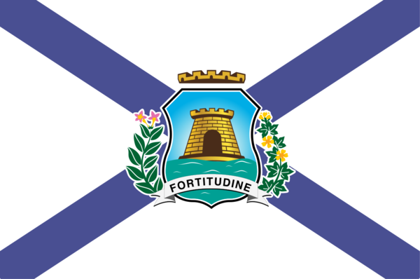

About Me
My name is Kevin. I am a data analyst who loves to learn. I was born and raised in Brazil, where I live with my wife and my beautiful dog. I love playing games with my friends, travelling with my wife and playing the guitar.

Fortaleza, Brasil

Fortaleza is one of the most popular tourist destinations in Brazil, located on the northeastern coast along the Atlantic Ocean. Known for its beautiful beaches, warm weather, and lively culture, the city attracts visitors from all over the world. Fortaleza is also famous for its delicious regional cuisine, including fresh seafood dishes, tapioca, and traditional treats like carne de sol and cuscuz.
Official Flag of Fortaleza, Brazil.